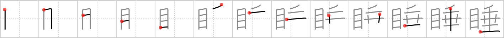

睡
← →
drowsy

Reading:
On-Yomi: スイ
Heisig story:
Eyes . . . droop.
Koohii stories:
1) [rgravina] 16-8-2006(290): Our eyes droop when we are drowsy.
2) [fuaburisu] 25-7-2007(37): Hint : the eyes of Droopy Dog (see droop (#1582 垂)). When you are drowsy you have "droopy eyes". That is, you have Droopy's eyes!
3) [fiddle] 27-12-2006(15): When you are DROWSY your EYE-lids DROOP, but imagine your whole EYES drooping out of their sockets - Urgh!
4) [CountPacula] 9-11-2009(9): Zzzz. (Really, do you need anything more for this, especially after you've made it this far into the book? :) ).
5) [rgon1737] 1-7-2010(3): Cuando estamos somnolientos, la única manera de mantenernos despiertos es haciendo que el párpado penda de algún sitio, con un hilo o algo por el estilo.